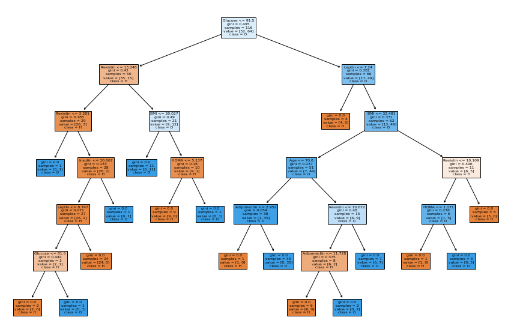

UTS Data Mining
Contents
UTS Data Mining#
Klasifikasi Data Pada Dataset Breats Cancer#
Lakukan analisa terhadap data pada https://archive.ics.uci.edu/ml/datasets/Breast+Cancer+Coimbra dengan menggunakan klasifikasi
Metode KNN
Metode pohon keputusan (Desision tree)
Data#
import numpy as np
import matplotlib.pyplot as plt
import seaborn as sns
import numba
import cv2 as cv
import pandas as pd
from sklearn.decomposition import PCA
from sklearn.neighbors import KNeighborsClassifier
from sklearn.metrics import confusion_matrix
from sklearn.model_selection import train_test_split
from sklearn.metrics import classification_report
from sklearn.tree import DecisionTreeClassifier
from sklearn.metrics import accuracy_score
from sklearn import tree
from matplotlib import pyplot as plt
data = pd.read_csv("https://raw.githubusercontent.com/LALA09-erha/Python-StrukturData/master/dataR2.csv")
data_1 = pd.read_csv("https://raw.githubusercontent.com/LALA09-erha/Python-StrukturData/master/dataR2.csv")
data
| Age | BMI | Glucose | Insulin | HOMA | Leptin | Adiponectin | Resistin | MCP.1 | Classification | |
|---|---|---|---|---|---|---|---|---|---|---|
| 0 | 48 | 23.500000 | 70 | 2.707 | 0.467409 | 8.8071 | 9.702400 | 7.99585 | 417.114 | 1 |
| 1 | 83 | 20.690495 | 92 | 3.115 | 0.706897 | 8.8438 | 5.429285 | 4.06405 | 468.786 | 1 |
| 2 | 82 | 23.124670 | 91 | 4.498 | 1.009651 | 17.9393 | 22.432040 | 9.27715 | 554.697 | 1 |
| 3 | 68 | 21.367521 | 77 | 3.226 | 0.612725 | 9.8827 | 7.169560 | 12.76600 | 928.220 | 1 |
| 4 | 86 | 21.111111 | 92 | 3.549 | 0.805386 | 6.6994 | 4.819240 | 10.57635 | 773.920 | 1 |
| ... | ... | ... | ... | ... | ... | ... | ... | ... | ... | ... |
| 111 | 45 | 26.850000 | 92 | 3.330 | 0.755688 | 54.6800 | 12.100000 | 10.96000 | 268.230 | 2 |
| 112 | 62 | 26.840000 | 100 | 4.530 | 1.117400 | 12.4500 | 21.420000 | 7.32000 | 330.160 | 2 |
| 113 | 65 | 32.050000 | 97 | 5.730 | 1.370998 | 61.4800 | 22.540000 | 10.33000 | 314.050 | 2 |
| 114 | 72 | 25.590000 | 82 | 2.820 | 0.570392 | 24.9600 | 33.750000 | 3.27000 | 392.460 | 2 |
| 115 | 86 | 27.180000 | 138 | 19.910 | 6.777364 | 90.2800 | 14.110000 | 4.35000 | 90.090 | 2 |
116 rows × 10 columns
Ubah Label 1=Healthy controls dan 2=Patients#
data_1['Classification'] = data_1['Classification'].apply({1:'Healthy controls', 2:'Patients'}.get)
data_1
| Age | BMI | Glucose | Insulin | HOMA | Leptin | Adiponectin | Resistin | MCP.1 | Classification | |
|---|---|---|---|---|---|---|---|---|---|---|
| 0 | 48 | 23.500000 | 70 | 2.707 | 0.467409 | 8.8071 | 9.702400 | 7.99585 | 417.114 | Healthy controls |
| 1 | 83 | 20.690495 | 92 | 3.115 | 0.706897 | 8.8438 | 5.429285 | 4.06405 | 468.786 | Healthy controls |
| 2 | 82 | 23.124670 | 91 | 4.498 | 1.009651 | 17.9393 | 22.432040 | 9.27715 | 554.697 | Healthy controls |
| 3 | 68 | 21.367521 | 77 | 3.226 | 0.612725 | 9.8827 | 7.169560 | 12.76600 | 928.220 | Healthy controls |
| 4 | 86 | 21.111111 | 92 | 3.549 | 0.805386 | 6.6994 | 4.819240 | 10.57635 | 773.920 | Healthy controls |
| ... | ... | ... | ... | ... | ... | ... | ... | ... | ... | ... |
| 111 | 45 | 26.850000 | 92 | 3.330 | 0.755688 | 54.6800 | 12.100000 | 10.96000 | 268.230 | Patients |
| 112 | 62 | 26.840000 | 100 | 4.530 | 1.117400 | 12.4500 | 21.420000 | 7.32000 | 330.160 | Patients |
| 113 | 65 | 32.050000 | 97 | 5.730 | 1.370998 | 61.4800 | 22.540000 | 10.33000 | 314.050 | Patients |
| 114 | 72 | 25.590000 | 82 | 2.820 | 0.570392 | 24.9600 | 33.750000 | 3.27000 | 392.460 | Patients |
| 115 | 86 | 27.180000 | 138 | 19.910 | 6.777364 | 90.2800 | 14.110000 | 4.35000 | 90.090 | Patients |
116 rows × 10 columns
type(data)
pandas.core.frame.DataFrame
Metode KNN Clafification#
split data
data.shape
(116, 10)
memisahkan data dengan kelas ke dalam dua variabel, X dan y
X = data.drop(columns=["Classification"])
X.head()
| Age | BMI | Glucose | Insulin | HOMA | Leptin | Adiponectin | Resistin | MCP.1 | |
|---|---|---|---|---|---|---|---|---|---|
| 0 | 48 | 23.500000 | 70 | 2.707 | 0.467409 | 8.8071 | 9.702400 | 7.99585 | 417.114 |
| 1 | 83 | 20.690495 | 92 | 3.115 | 0.706897 | 8.8438 | 5.429285 | 4.06405 | 468.786 |
| 2 | 82 | 23.124670 | 91 | 4.498 | 1.009651 | 17.9393 | 22.432040 | 9.27715 | 554.697 |
| 3 | 68 | 21.367521 | 77 | 3.226 | 0.612725 | 9.8827 | 7.169560 | 12.76600 | 928.220 |
| 4 | 86 | 21.111111 | 92 | 3.549 | 0.805386 | 6.6994 | 4.819240 | 10.57635 | 773.920 |
#separate target values
y = data["Classification"].values
#view target values
y[0:150]
array([1, 1, 1, 1, 1, 1, 1, 1, 1, 1, 1, 1, 1, 1, 1, 1, 1, 1, 1, 1, 1, 1,
1, 1, 1, 1, 1, 1, 1, 1, 1, 1, 1, 1, 1, 1, 1, 1, 1, 1, 1, 1, 1, 1,
1, 1, 1, 1, 1, 1, 1, 1, 2, 2, 2, 2, 2, 2, 2, 2, 2, 2, 2, 2, 2, 2,
2, 2, 2, 2, 2, 2, 2, 2, 2, 2, 2, 2, 2, 2, 2, 2, 2, 2, 2, 2, 2, 2,
2, 2, 2, 2, 2, 2, 2, 2, 2, 2, 2, 2, 2, 2, 2, 2, 2, 2, 2, 2, 2, 2,
2, 2, 2, 2, 2, 2])
Memisahkan Data Training dan Test#
from sklearn.model_selection import train_test_split
#split dataset into train and test data
X_train, X_test, y_train, y_test = train_test_split(X, y, test_size=0.2, random_state=1, stratify=y)
membuat Model#
Dengan menetapkan N = 3 atau 3 tetangga
from sklearn.neighbors import KNeighborsClassifier
# Create KNN classifier
knn = KNeighborsClassifier(n_neighbors = 3)
# Fit the classifier to the data
knn.fit(X_train,y_train)
KNeighborsClassifier(n_neighbors=3)
Melakukan testing data pada model#
#show first 5 model predictions on the test data
knn.predict(X_test)[1:25]
array([2, 1, 2, 2, 1, 2, 1, 2, 2, 2, 1, 1, 1, 1, 2, 2, 2, 1, 2, 2, 2, 2,
2])
Menghitung akurasi yang didapat#
#check accuracy of our model on the test data
knn.score(X_test, y_test)
0.3333333333333333
Melakukan K-Fold Cross Validation#
from sklearn.model_selection import cross_val_score
import numpy as np
#create a new KNN model
knn_cv = KNeighborsClassifier(n_neighbors=6)
#train model with cv of 5
cv_scores = cross_val_score(knn_cv, X, y, cv=5)
#print each cv score (accuracy) and average them
print(cv_scores)
print("cv_scores mean:{}".format(np.mean(cv_scores)))
[0.45833333 0.60869565 0.47826087 0.43478261 0.43478261]
cv_scores mean:0.4829710144927536
Hypertuning model parameters menggunakan GridSearchCV#
from sklearn.model_selection import GridSearchCV
#create new a knn model
knn2 = KNeighborsClassifier()
#create a dictionary of all values we want to test for n_neighbors
param_grid = {'n_neighbors': np.arange(1, 25)}
#use gridsearch to test all values for n_neighbors
knn_gscv = GridSearchCV(knn2, param_grid, cv=5)
#fit model to data
knn_gscv.fit(X, y)
GridSearchCV(cv=5, estimator=KNeighborsClassifier(),
param_grid={'n_neighbors': array([ 1, 2, 3, 4, 5, 6, 7, 8, 9, 10, 11, 12, 13, 14, 15, 16, 17,
18, 19, 20, 21, 22, 23, 24])})
Mengecek n yang terbaik#
#check top performing n_neighbors value
knn_gscv.best_params_
{'n_neighbors': 23}
Mengecek Hasil dari n yang terbaik#
#check mean score for the top performing value of n_neighbors
knn_gscv.best_score_
0.5688405797101449
Kesimpulan#
Dari Hasil diatas bahwa n yang terbaik yaitu 23 dengan hasil 0.5688405797101449
Metode Decision Tree#
data
| Age | BMI | Glucose | Insulin | HOMA | Leptin | Adiponectin | Resistin | MCP.1 | Classification | |
|---|---|---|---|---|---|---|---|---|---|---|
| 0 | 48 | 23.500000 | 70 | 2.707 | 0.467409 | 8.8071 | 9.702400 | 7.99585 | 417.114 | 1 |
| 1 | 83 | 20.690495 | 92 | 3.115 | 0.706897 | 8.8438 | 5.429285 | 4.06405 | 468.786 | 1 |
| 2 | 82 | 23.124670 | 91 | 4.498 | 1.009651 | 17.9393 | 22.432040 | 9.27715 | 554.697 | 1 |
| 3 | 68 | 21.367521 | 77 | 3.226 | 0.612725 | 9.8827 | 7.169560 | 12.76600 | 928.220 | 1 |
| 4 | 86 | 21.111111 | 92 | 3.549 | 0.805386 | 6.6994 | 4.819240 | 10.57635 | 773.920 | 1 |
| ... | ... | ... | ... | ... | ... | ... | ... | ... | ... | ... |
| 111 | 45 | 26.850000 | 92 | 3.330 | 0.755688 | 54.6800 | 12.100000 | 10.96000 | 268.230 | 2 |
| 112 | 62 | 26.840000 | 100 | 4.530 | 1.117400 | 12.4500 | 21.420000 | 7.32000 | 330.160 | 2 |
| 113 | 65 | 32.050000 | 97 | 5.730 | 1.370998 | 61.4800 | 22.540000 | 10.33000 | 314.050 | 2 |
| 114 | 72 | 25.590000 | 82 | 2.820 | 0.570392 | 24.9600 | 33.750000 | 3.27000 | 392.460 | 2 |
| 115 | 86 | 27.180000 | 138 | 19.910 | 6.777364 | 90.2800 | 14.110000 | 4.35000 | 90.090 | 2 |
116 rows × 10 columns
Membuat Model Clasifier Decision Tree#
y = data["Classification"]
X = data.drop(columns=["Classification"])
clf = tree.DecisionTreeClassifier(criterion="gini")
clf = clf.fit(X, y)
data.value_counts
<bound method DataFrame.value_counts of Age BMI Glucose Insulin HOMA Leptin Adiponectin \
0 48 23.500000 70 2.707 0.467409 8.8071 9.702400
1 83 20.690495 92 3.115 0.706897 8.8438 5.429285
2 82 23.124670 91 4.498 1.009651 17.9393 22.432040
3 68 21.367521 77 3.226 0.612725 9.8827 7.169560
4 86 21.111111 92 3.549 0.805386 6.6994 4.819240
.. ... ... ... ... ... ... ...
111 45 26.850000 92 3.330 0.755688 54.6800 12.100000
112 62 26.840000 100 4.530 1.117400 12.4500 21.420000
113 65 32.050000 97 5.730 1.370998 61.4800 22.540000
114 72 25.590000 82 2.820 0.570392 24.9600 33.750000
115 86 27.180000 138 19.910 6.777364 90.2800 14.110000
Resistin MCP.1 Classification
0 7.99585 417.114 1
1 4.06405 468.786 1
2 9.27715 554.697 1
3 12.76600 928.220 1
4 10.57635 773.920 1
.. ... ... ...
111 10.96000 268.230 2
112 7.32000 330.160 2
113 10.33000 314.050 2
114 3.27000 392.460 2
115 4.35000 90.090 2
[116 rows x 10 columns]>
Membuat Grafik Decision Tree dari hasil Klasifikasi#
fig = plt.figure(figsize=(15,10))
_ = tree.plot_tree(clf, feature_names=list(data.columns.values)[:9], class_names=list(data.columns.values)[4] ,filled=True)
